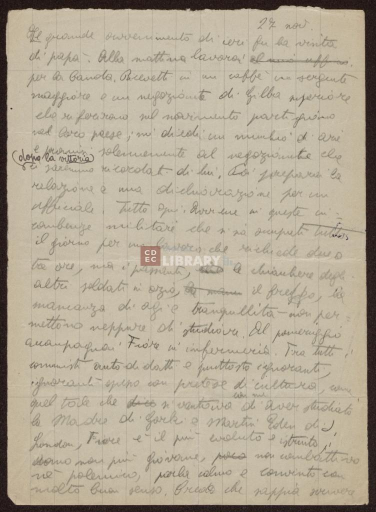
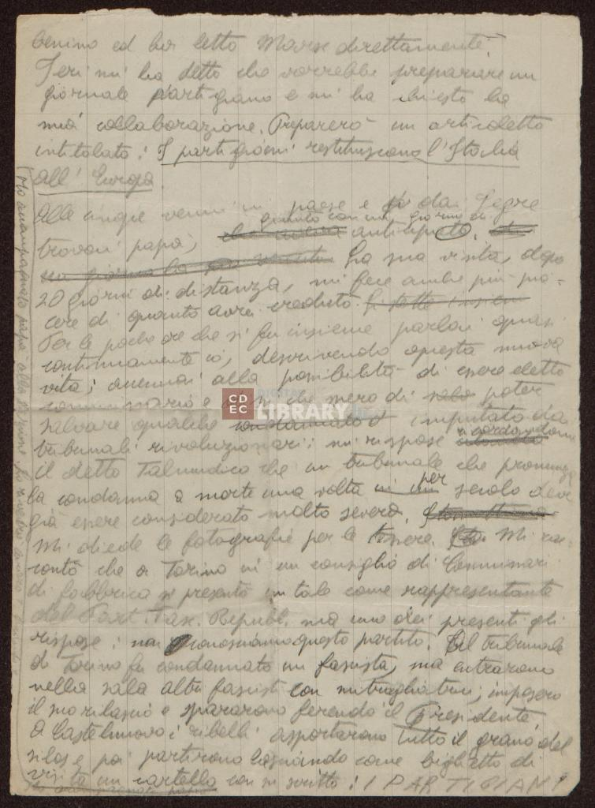

Centro di documentazione ebraica contemporanea,
Fondo Emanuele Artom
Codice documento:
b.1, fasc.9
Condizione manoscritto:
Supporto:
Carta
Pagine:
Il manoscritto si compone di 2 pagine riguardante l'epigrafe scritta da Amalia Artom
più 172 riguardanti il diario.
Condizioni:
Le pagine del manoscritto che ho trattato sono tenute abbastanza bene, escludendo
le varie cancellature
o sbavature di inchiostro
Mani:
La prima pagina del manoscritto è stata scritta da
Amalia Artom
Le restanti pagine sono interamente scritte da
Emanuele Artom
Storia:
I diari degli scritti autografi di Emanuele Artom è frutto della ricerca e raccolta
della documentazione intrapresa
da Amalia Artom nell'immediato dopoguerra per il bisogno di ricordare o trasmettere
le memorie del figlio Emanuele. Resi fruibili
dalla madre quali fonti storiche sull'ebraismo e sulla Resistenza in Italia.


27 nov
1
Il grande avvenimento di ieri fu la visita
2
di papà. Alla mattina lavorai al mio ufficio 3
per la banda. Ricevetti in un caffè un sergente
4
maggiore e un negoziante di Gilba superiore 5
che riferirono sul movimento partigiano 6
nel loro paese; mi diedi un minuto d'aria
7
e promisi solennemente al negoziante che
8 dopo la vittoria
ci saremmo ricordati di lui. Poi preparai la
9
relazione e una dichiarazione per un
10
ufficiale. Tutto qui. Avviene in queste in
11
combenze militari che si sia occupati tutto
12
il giorno per un lavoro che richiede due o
13
tre ore, ma i passanti, le chiacchiere degli
14
altri soldati in ozio,
il freggddo, la
15
mancanza di agi e tranquillità non per
16
mettono neppure di studiare. Al pomeriggio
17
accompagnai Fiore in infermeria. Tra tutti i
18 comunisti autodidatti e piuttosto ignoranti,
19
ignoranti spesso con pretese di cultura, come
20
quel tale che dico si vantava con me di aver studiato
21
la madre di Gorki e Martin Eden di J.
22
London, Fiore è il più evoluto e istruito,
23
uomo non più giovane, poco non combattivo
24
nè polemico, parla calmo e convinto con
25
molto buon senso. Credo che sappia scrivere
1
benino ed ha letto Marx direttamente.
2
Ieri mi ha detto che vorrebbe preparare un
3
giornale partigiano e mi ha chiesto la
4
mia collaborazione. Preparerò un articoletto
5
intitolato:
i partigiani restituiscono l'Italia
6
all'Europa.
7
Alle 5 venni in paese e dai Segre 8
trovai papà, giunto con un giorno di
anticipatoodi 9 un giorno la sua venuta. La sua visita, dopo
10
20 giorni di distanza, mi fece anche più pia
11
cere di quanto avrei creduto. si stette insieme 12
Per le poche ore che si fu insieme parlai quasi
13
continuamente io, descrivendo questa nuova
14
vita; accennai alla possibilità di essere eletto
15
commissario e dissi che spero di
solo poter
16
salvare qualche condannatoimputato da
17
tribunali rivoluzionari; mi rispose ricordandomi 18
il detto Talmudico che un tribunale che pronunzia
19
la condanna a morte una volta in un per secolo deve
20
già essere considerato molto severo. 21
Mi diede le fotografie per le tessere.
Mi ra
22
ccontò che a Torino in un consiglio di commissari
23
di fabbrica si presentò un tale come rappresentante
24
del Part.fasc.repubbl. ma uno dei presenti gli
25
rispose:
non riconosciamo questo partito.
Al tribunale
26
di Torino fu condannato un
fascista, ma entrarono
27
nella sala altri fascisti con mitragliatrici, imposero
28
il suo rilascio e spararono ferendo il Presidente.
29
A Castelnuovo i ribelli asportarono tutto il grano del
30
silos e poi partirono lasciando come biglietto dida
31
visita un cartello con su scritto:
I PARTIGIANI. 32 33 Ho accompagnato papà alla stazione. Lo rivedrò ancora? Quando?